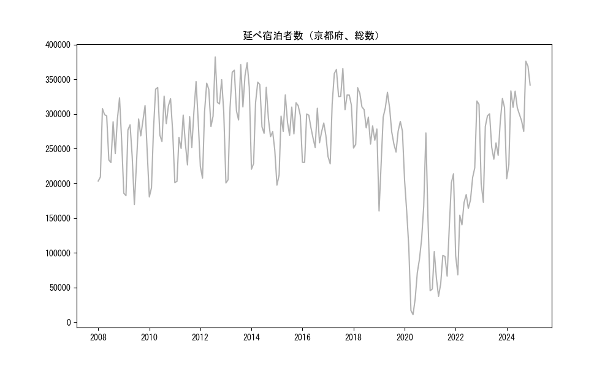
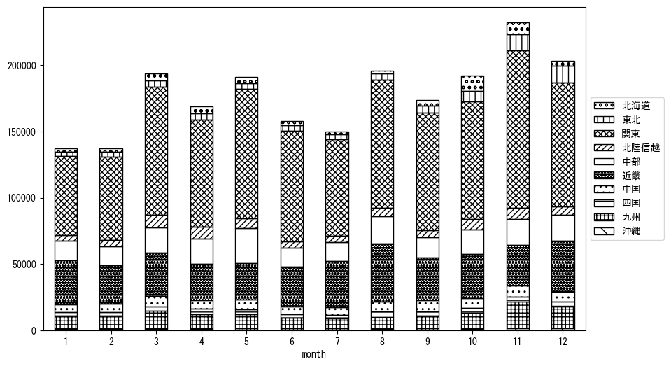

-
トップ
-
京都府
京都府
１．延べ宿泊者（総数）の推移
時系列グラフ

図１：京都府内の従業員数100人以上の宿泊施設での延べ宿泊者数（国外、居住地不詳を含む総数）。
基本統計量
表１：従業員数100人以上の宿泊施設での延べ宿泊者の総数（国外、および居住地不詳を含む）に関する基本統計量。単位は人泊。平均は１か月あたりの平均値を表す。図１に対応。
| 2008年 |
265,879 |
40,832 |
203,462 (1月) |
323,346 (11月) |
| 2009年 |
248,057 |
47,904 |
169,724 (6月) |
312,233 (11月) |
| 2010年 |
281,329 |
51,561 |
180,617 (1月) |
338,212 (5月) |
| 2011年 |
266,099 |
43,419 |
201,266 (1月) |
346,826 (11月) |
| 2012年 |
304,976 |
49,719 |
207,541 (2月) |
382,099 (8月) |
| 2013年 |
315,299 |
59,550 |
200,654 (1月) |
373,947 (11月) |
| 2014年 |
285,746 |
42,830 |
220,509 (1月) |
345,886 (4月) |
| 2015年 |
281,183 |
40,221 |
197,606 (1月) |
327,584 (5月) |
| 2016年 |
271,170 |
25,594 |
230,295 (2月) |
308,346 (8月) |
| 2017年 |
316,155 |
43,461 |
228,243 (2月) |
365,519 (8月) |
| 2018年 |
287,287 |
29,075 |
250,921 (1月) |
337,895 (3月) |
| 2019年 |
271,015 |
44,976 |
160,392 (1月) |
331,275 (5月) |
| 2020年 |
117,088 |
78,787 |
10,974 (5月) |
272,717 (11月) |
| 2021年 |
96,619 |
59,132 |
37,461 (5月) |
213,922 (12月) |
| 2022年 |
184,916 |
74,874 |
68,268 (2月) |
318,787 (11月) |
| 2023年 |
263,219 |
45,571 |
172,782 (2月) |
322,341 (11月) |
２．宿泊者数の重心（年平均の推移）
図２：京都府内の従業員数100人以上の宿泊施設での宿泊者数（国外、居住地不詳を除く）の重心（年平均の推移）。
全画面表示
重心の前年平均からの移動距離と方位、および緯度・経度
表２：重心の前年平均からの移動距離と方位、および緯度・経度。図２に対応。
| 2008年 |
— |
— |
35.5602 |
137.5654 |
| 2009年 |
南西 |
4.2km |
35.5359 |
137.5293 |
| 2010年 |
東北東 |
12.8km |
35.5721 |
137.6637 |
| 2011年 |
西南西 |
11.0km |
35.5494 |
137.5452 |
| 2012年 |
東 |
7.3km |
35.5433 |
137.6254 |
| 2013年 |
東南東 |
3.1km |
35.5286 |
137.6543 |
| 2014年 |
北北東 |
3.7km |
35.5584 |
137.6726 |
| 2015年 |
北東 |
5.2km |
35.5869 |
137.7184 |
| 2016年 |
西 |
2.6km |
35.5831 |
137.6898 |
| 2017年 |
西南西 |
9.2km |
35.5391 |
137.6039 |
| 2018年 |
東北東 |
7.7km |
35.5708 |
137.6793 |
| 2019年 |
西南西 |
4.7km |
35.5521 |
137.6333 |
| 2020年 |
南西 |
31.2km |
35.3559 |
137.3868 |
| 2021年 |
西北西 |
5.5km |
35.3690 |
137.3285 |
| 2022年 |
東北東 |
19.0km |
35.4371 |
137.5210 |
| 2023年 |
北 |
5.9km |
35.4898 |
137.5260 |
運輸局別延べ宿泊者数
時系列（年平均）
 図３：京都府内の従業員数100人以上の宿泊施設での１か月あたり平均宿泊者数（国外、居住地不詳を除く）の運輸局別内訳。
図３：京都府内の従業員数100人以上の宿泊施設での１か月あたり平均宿泊者数（国外、居住地不詳を除く）の運輸局別内訳。
寄与度（前年からの変化率に対する）
図４：京都府内の従業員数100人以上の宿泊施設での運輸局別宿泊者数（国外、居住地不詳を除く）から求めた寄与度。
３．宿泊者数の重心（月別）
図５：京都府内の従業員数100人以上の宿泊施設での宿泊者数（国外、居住地不詳を除く）の重心（月別）。観測期間は2008年1月から2023年12月まで。
全画面表示
全期間（2008年1月～2023年12月）の平均と月別平均の比較
表３：全期間の平均から月別平均までの移動距離と方位、および緯度・経度。図５に対応。
| 全期間 |
— |
— |
35.5207 |
137.5839 |
| 1月 |
西南西 |
37.4km |
35.3599 |
137.2220 |
| 2月 |
西南西 |
26.9km |
35.3932 |
137.3325 |
| 3月 |
東北東 |
6.1km |
35.5509 |
137.6398 |
| 4月 |
北東 |
4.5km |
35.5452 |
137.6228 |
| 5月 |
東 |
13.9km |
35.5013 |
137.7355 |
| 6月 |
東南東 |
10.6km |
35.4966 |
137.6968 |
| 7月 |
南南西 |
12.2km |
35.4196 |
137.5301 |
| 8月 |
南 |
14.9km |
35.3872 |
137.5629 |
| 9月 |
東 |
4.6km |
35.5221 |
137.6347 |
| 10月 |
北北東 |
40.1km |
35.8544 |
137.7541 |
| 11月 |
北東 |
25.3km |
35.6925 |
137.7681 |
| 12月 |
西 |
6.9km |
35.5258 |
137.5078 |
運輸局別延べ宿泊者数
月別平均（2008年1月～2023年12月）

図６：京都府内の従業員数100人以上の宿泊施設での宿泊者数（国外、居住地不詳を除く）の運輸局別内訳（月別）。
寄与度（全期間の平均から月別平均への変化率に対する）
図７：京都府内の従業員数100人以上の宿泊施設での運輸局別宿泊者数（国外、居住地不詳を除く）から求めた寄与度（月別）。
４．データのダウンロード
出典：観光庁「宿泊旅行統計調査」に収録された「施設所在地、居住地別延べ宿泊者数（従業員数100人以上の施設）」
国土地理院「白地図（地理院タイル）」（図２と図５）